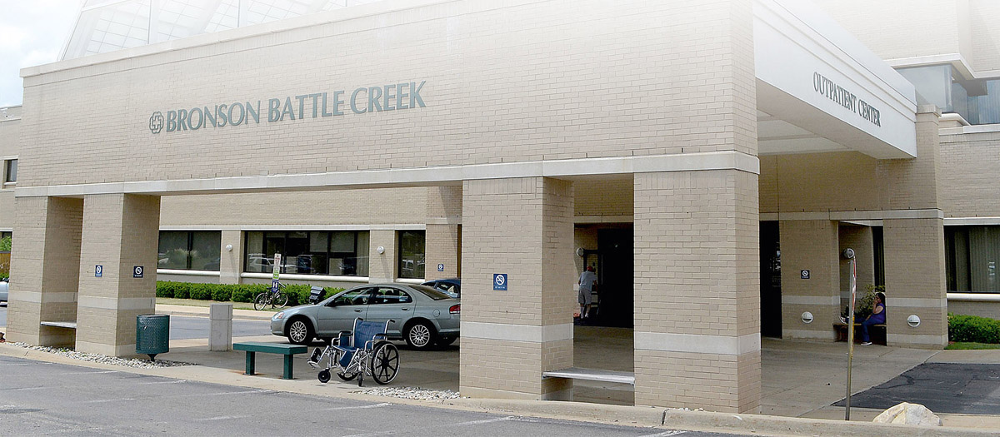
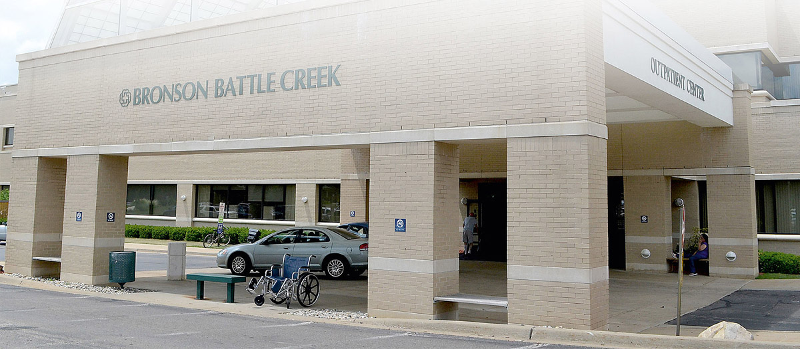

Your decisions impact lives. There's a better way to make them.
Sudah waktunya untuk memanfaatkan setiap sen yang telah Anda habiskan dan catatan yang didigitalkan oleh efisiensi keuangan di seluruh rumah sakit dan efisiensi operasional pertumbuhan yang diperlukan untuk memenuhi misi Anda.
Datanglah ke Rumah sakit iQ klik button dibawah untuk melihat informasi lokasi..
 
